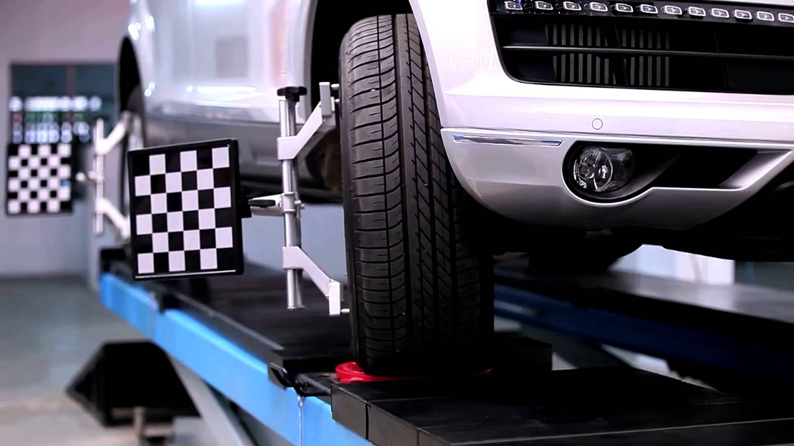
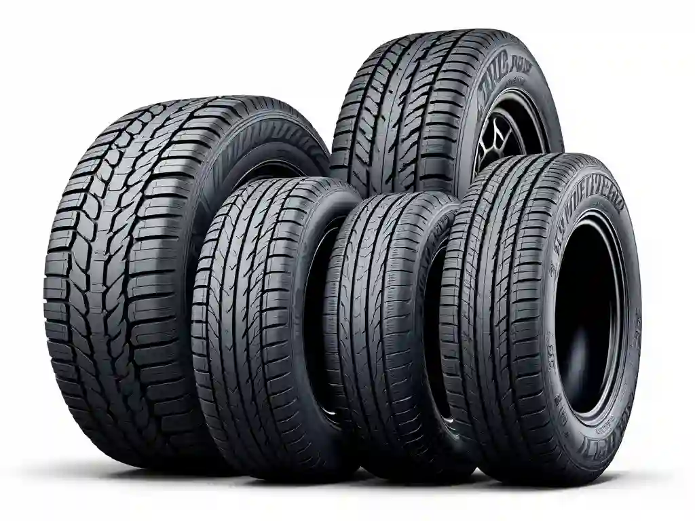
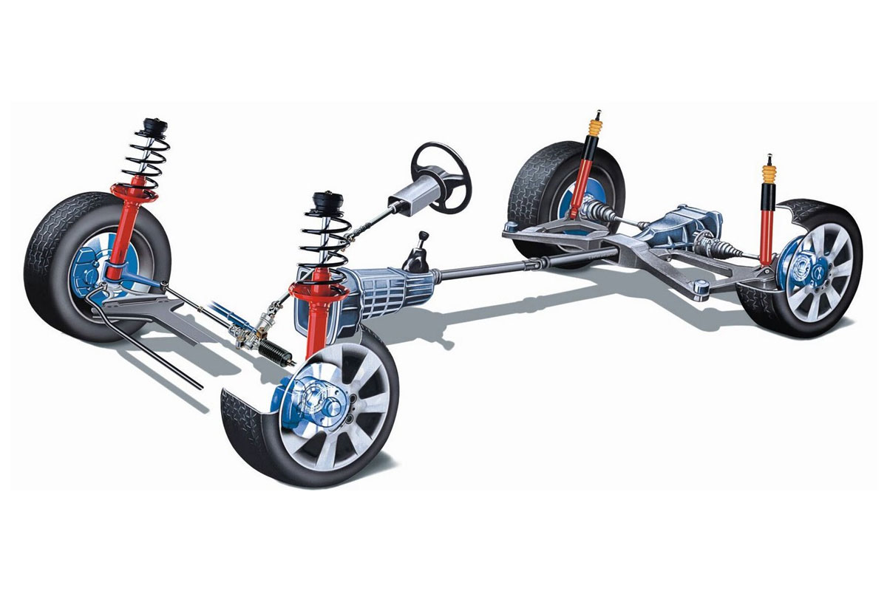
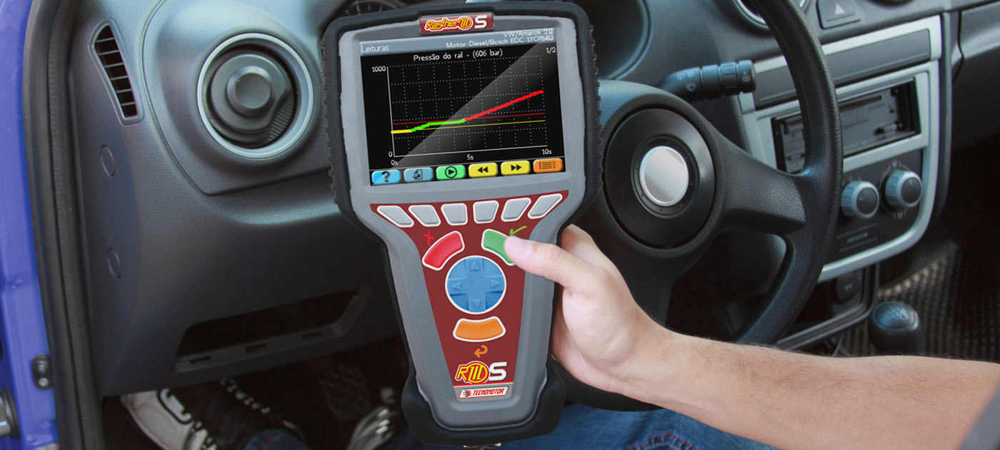

Fundado em 1998, o Auto Center Dev Quester nasceu com a missão de oferecer soluções completas e
confiáveis para
a manutenção e cuidados automotivos. Desde o início, nosso compromisso sempre foi unir qualidade,
tecnologia e atendimento personalizado para garantir a satisfação e a segurança de nossos clientes.
Ao longo de mais de duas décadas de atuação, consolidamos nossa reputação como referência no setor.
Contamos com uma equipe altamente capacitada e apaixonada pelo que faz, sempre em busca das melhores
soluções para cada veículo que passa por nossas mãos.
Com uma infraestrutura moderna e equipamentos de última geração, oferecemos serviços que vão desde a manutenção preventiva e corretiva até revisões completas, alinhamento, balanceamento, troca de óleo, e muito mais. Tudo para que você e seu veículo estejam sempre prontos para encarar a estrada com tranquilidade.
Seja bem vindo ao Auto Center Dev Quester - onde sua confiança é a nossa direção!
Saiba mais através dos contatos
Diferentemente dos métodos convencionais, o alinhamento 3D oferece maior precisão porque considera todos os aspectos geométricos do veículo. Essa abordagem resulta em um desempenho superior, maior durabilidade dos pneus e economia de combustível. Além disso, um alinhamento correto proporciona uma direção mais estável, evitando vibrações e aumentando a segurança ao dirigir.

Um pneu de boa qualidade não é apenas um item de segurança, mas também uma forma de economizar. Ele reduz o consumo de combustível, melhora a estabilidade do veículo e proporciona uma dirigibilidade mais confortável. Além disso, escolher pneus adequados às condições do terreno e ao clima aumenta a eficiência e prolonga sua vida útil.
Trocar o óleo regularmente é um investimento pequeno que previne problemas grandes. Confie em profissionais qualificados da Auto Center Dev Quester para realizar o serviço e garanta que seu veículo esteja sempre em condições ideais para encarar a estrada!

A suspensão e os freios são dois dos sistemas mais importantes em qualquer veículo, pois garantem não apenas a segurança, mas também o conforto e o desempenho ao dirigir. Ambos trabalham em harmonia para proporcionar estabilidade, controle e eficiência, seja em situações cotidianas ou em momentos críticos na estrada.

O diagnóstico com raster é uma tecnologia avançada que utiliza scanners automotivos para identificar, em tempo real, falhas e irregularidades nos sistemas eletrônicos do veículo. Com os carros modernos cada vez mais equipados com sensores e módulos eletrônicos, o uso do raster se tornou indispensável para garantir uma manutenção precisa e eficiente.
Após o preenchimento ser realizado será enviado um email com um QRCODE, apresenta-lo na visita a Auto Center Dev Quester. O QRCODE expira em 5 dias úteis.